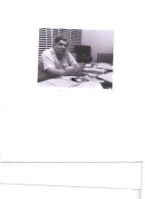

Please note: the AAS Obituaries are temporarily being hosted on this website while their full content is being ingested into the PubPub publishing platform newly adopted by the Bulletin of the American Astronomical Society. When the migration is complete, your existing links will take you to the final, migrated content. Contact peter.williams@aas.org with any questions.
Geoffrey R. Burbidge (1925-2010)
Geoffrey R. Burbidge, one of the principal architects of 20th century astrophysics, died in La Jolla, California on January 26, 2010. Together with his wife and life-long collaborator, Margaret Burbidge and several leading astrophysicists, he originated ideas that remain at the core of current astrophysical research. He was, of course, co-author of B2FH (Burbidge, Burbidge, Fowler, & Hoyle 1957), one of the most influential scientific papers ever written, which explained how elements heavier than helium are synthesized in the interiors of stars. Geoff Burbidge’s research interests spanned a wide range of topics. He was the first to estimate the colossal energetics of extragalactic radio sources. Together with Margaret and Kevin Prendergast he initiated the first systematic program to measure the masses of galaxies from their rotation curves. He published research that effectively began the field of “active galactic nuclei”, and he made the fundamental suggestion that galactic X-ray sources were powered by viscous transport of energy in accretion disks surrounding neutron stars or black holes in binary star systems. After the discovery of quasars in 1963, he wrote influential papers on gravitational collapse as their energy source and an excellent book summarizing research on this subject. During the latter part of his career Geoff Burbidge became known as the “great contrarian” who remained skeptical about the cosmological origin of quasar redshifts and rejected the big bang theory. He was author of 355 publications.
Geoff was born in 1925 September in Chipping Norton Oxfordshire, where he grew up and developed a lifelong passion for tennis. He attended the yearly matches at Wimbledon with his father, a ritual he maintained for most of his life. In 1946 he got his undergraduate degree in physics at the University of Bristol. After graduating he was assigned for eighteen months to a government ballistics laboratory in London where he became an expert in testing penetration bombs and other types of demolition devices, and where he decided to pursue a graduate career in physics. In 1947 he began studying theoretical physics with H. Massey at University College London and received his PhD in physics in 1950 with a thesis concerning capture of muons by atoms. During his stay in London, Geoff ’s interest in astronomy was sparked upon meeting his future wife, Margaret Peachey, who was the Assistant Director of the University of London Observatory; they married in 1948. Margaret was working on spectral variations in Be stars, and Geoff collaborated with her by participating in her observing runs and in performing theoretical analysis, beginning a unique and famous scientific partnership that lasted over 60 years.
After Geoff obtained his PhD, he and Margaret went to the U.S. in 1951, he to Harvard and she to Yerkes Observatory. Between 1951 and 1957 the Burbidges held research appointments at Cambridge University, Carnegie Observatories, and Caltech. Between 1957 and 1962 Geoff and Margaret held faculty positions at the University of Chicago Yerkes Observatory in Wisconsin. Between 1959 and 1969, Geoff, Margaret, and their Yerkes colleague Kevin Prendergast carried out the first comprehensive investigation of galaxy masses. Geoff Burbidge, along with Margaret, joined the faculty of the University of California, San Diego in 1962, where, except for short stints back in the U.K. and his directorship of Kitt Peak National Observatory, he stayed until he passed away. Burbidge’s research focused on quasars after their discovery in 1963. He participated in the discovery of quasar absorption lines in 1966, which led to much fruitful research concerning the foreground absorbing gas
Burbidge also contributed in many other ways to the astronomical community. He was editor of Annual Reviews of Astronomy and Astrophysics (i.e., ARAA) from 1973 to 2004. The editorial committees regarded him as an excellent editor who kept his scientific prejudices out of the discussions and who was mainly responsible for the superb reputation of this journal. He was Director of Kitt Peak National Observatory from 1978 to 1984, where he carried out much needed reforms, and scientific editor of the Astrophysical Journal from 1995 to 2001. He also served on several committees including chairmanship of the Astronomical Advisory Committee for the National Science Foundations in 1966-1967. He was on the board of the Association of Universities for Research in Astronomy from 1970 to 1974, the organization that administers Kitt Peak National Observatory, Cerro Tololo Interamerican Observatory, and Sacramento Peak Observatory. From 1972 to 1982, he was a board member of the Associated Universities Inc., which administers the Brookhaven National Laboratory and the National Radio Astronomy Observatory.
Geoff and Margaret were recipients of the Gold Medal of the Royal Astronomical Society in 2005. He received the Catherine Bruce Gold Medal of the Astronomical Society of the Pacific in 1999 and the Jansky Prize of the National Radio Astronomy Observatory in 1985. In 1959, he and Margaret received the Warner Prize of the American Astronomical Association. He was also a fellow of the Royal Society, the American Academy of Arts and Sciences, the American Physical Society, and the University of London.
Geoff exhibited two outstanding traits. First, he had a high sense of personal integrity. This was evident in the editorial sessions of the ARAA. When deciding who should be asked to write a review article about a specific topic, he would usually favor the person with the best scientific reputation, even if he disagreed with the scientific opinions of that individual. When adjudicating personal conflicts, Geoff was neither swayed by institutional prestige nor the seniority of the participants. Rather, he tried to get at the core of the truth, even if that meant sticking up for the underdog against more powerful voices.
Geoff had another admirable quality: he was loyal to his friends. He could always be counted on for support no matter how difficult the circumstances. This is the characteristic that this author will miss the most.
Obituary written by: Arthur M. Wolfe (University of California, San Diego)
BAAS Citation: BAAS, 2011, 43, 005
SAO/NASA ADS Bibcode: 2011BAAS...43..005B